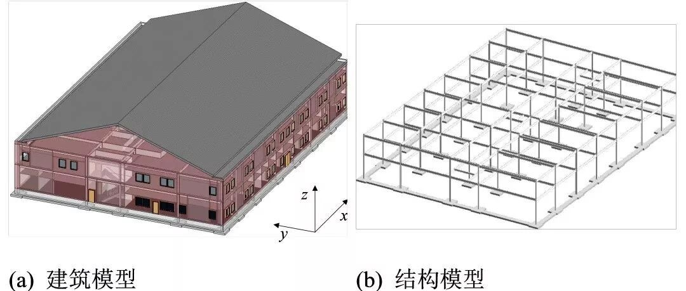

新论文：适用于多LOD BIM的建筑地震损失评估
适用于多LOD BIM的建筑地震损失评估
Seismic loss assessment for buildings with various-LOD BIM data
Advanced Engineering Informatics
论文链接：
https://www.sciencedirect.com/science/article/pii/S1474034618305020
研究背景介绍
随着抗震研究与设计标准的不断提高，经严格抗震设计的建筑出现倒塌的概率越来越低。然而，建筑虽然在地震中未倒，但可能造成极高的震后修复成本，严重影响抗震韧性。例如，在2011年新西兰Christchurch地震中，该城市CBD区域内近70%的建筑因为修复成本太高而被迫拆除。
精细化的建筑地震损失评估可为建筑抗震设计、加固策略等提供关键决策参考，进而提高建筑抗震韧性。
FEMA P-58的精细化数据需求
为实现上述目的，美国联邦应急署（FEMA）历经10年努力，提出了下一代抗震性能化设计框架下的研究成果——FEMA P-58。该方法通过直接考虑建筑每类结构和非结构构件的破坏和维修费用，以更精细地考虑建筑地震经济损失，被广泛用于单体建筑的震损详细评估中。而且，FEMA P-58方法提供了700余种建筑构件的易损性曲线和修复成本数据库，便于实际应用。

图1 FEMA P-58方法（卷一）
但是，FEMA P-58所需要的数据也极为精细。具体来讲，不仅需要构件尺寸、材料、施工做法、力学特性，甚至需要构件间连接关系及放置方向等。可以说，FEMA P-58是一把破解建筑地震损失评估问题的“好枪”，但是也需要精细数据作为“弹药”。那么谁能提供这种“弹药”呢？
BIM是一个不错的选择。BIM自身包含了丰富的建筑信息，可以提供构件级别的精细数据，正好可以满足FEMA P-58的精细化数据需求。

BIM的多LOD挑战
然而，采用BIM数据实现基于FEMA P-58建筑地震损失评估并不是一件简单的事情，存在不少挑战。其中，一个重要的挑战就是不同BIM模型的发展程度和精细程度的差异化问题，也就是多LOD（Level of development）问题。
在建筑信息模型中，不同发展程度的构件包含建筑信息的丰富程度不同，能提供给FEMA P-58的信息也不相同。因此，需设计一个统一的方法兼容不同的LOD，并且能够保证LOD越高，地震损失评估结果越准确。

此外，即使BIM构件有很高的LOD，也可能难以包含FEMA P-58所需的全部信息，或因建模风格不同导致信息提取失败。因此，需对BIM的建模过程提出适当的要求，使其能为建筑震损评估提供尽量多的有用数据。
解决方案
(1) 适用于多LOD数据的易损性确定方法
基于FEMA P-58的地震损失评估的基础性问题就是确定构件的易损性，进而可以根据易损性和对应的结果函数计算构件的震害和损失。
首先，通过根据FEMA P-58的分类规则建立决策树，进而确定候选易损性分类编码。一块石膏板隔墙在FEMA P-58对应的候选易损性函数编号如图2所示。

图2 石膏板隔墙的决策分类树
美国建筑师学会（AIA）定义了LOD纲要，BIMForum对其进行了细化。根据其细化规定，LOD 200构件可到达深度为2的节点，LOD 300构件可到达深度为3的节点，而LOD 350及以上构件则包含了所有所需信息，而可直达叶节点（见图2分类树）。
然后，利用蒙特卡洛方法进行大量随机模拟，得到该情形下构件的脆弱性函数（如维修费用对于工程需求参数EDP的函数），且所得的脆弱性函数综合了所有候选构件类型的特性。
以石膏板隔墙（C1011）为例，选择上图决策树中6个节点作为案例进行说明，将其按照深度顺序编号为1 ~ 6号，计算每个节点的脆弱性函数，如图3所示。

图3 石膏板隔墙1 ~ 6号节点的脆弱性函数
上述方法的主要优势在于：既可以使用一个基于FEMA P-58方法的统一框架处理不同LOD构件的损失评估，又能充分利用可用的信息。当信息越充分时，候选的构件类型越少，所对应的脆弱性函数的不确定性越低。
(2) BIM建模规则与信息提取
目前BIM建模的软件平台很多，为了便于说明，本文所提及的BIM建模采用广泛使用的Autodesk公司推出的Revit 2018软件。具体BIM建模规则与信息提取方法请点击文末“阅读原文”，不再赘述。
应用案例
以一个2层钢框架办公楼为例，如图4所示。该建筑的BIM模型根据美国建筑师学会（AIA）的LOD纲要建立，可在BIMForum可公开下载。

图4 示例办公楼的Revit模型
为了考察建筑数据完备程度给震损带来的不确定性，本文以这个基准模型为基础，建立了3个虚拟的建筑信息模型，如表1所示。注意：结构构件的数据完备程度会影响整个建筑的地震响应。为了控制不确定性的来源，假定3个虚拟建筑的结构构件种类和数量是确定的，且完全相同。
表1 案例分析采用的3个模型

基于本文方法，利用Revit API中提取建筑震损评估所需信息，如图5所示（以MEP为例）。

图5 HVAC风管构件信息提取示意图
选择广泛使用的El-Centro地震动为例，PGA设为0.2g。利用BIM转换到ETABS软件中计算结构反应，获取所需的工程需求参数EDP。
3栋建筑的地震损失分析结果如图6所示。对比建筑A、B和C可知，随着建筑信息模型中包含的信息不断丰富，地震总损失的不确定性有减小的趋势（对数标准差分别为0.38、0.28、0.14）。即使仅仅已知建筑抗震设计类别和结构信息（建筑A），也可以得到一个可用的地震损失结果。

图6 不同LOD模型的地震总损失
而且，本方法也可以给出不同构件的具体损失，可用于具体修复策略的决策支持，如图7所示。

图7 各个构件的损失中位值
总结
（1）针对BIM的多LOD问题，提出了基于分类决策树和蒙特卡洛的构件易损性确定方法；针对BIM信息提取与建模差异化问题，提出了基于Revit平台的建模规则与信息提取方法。
（2）案例表明，一方面，即使可用信息非常有限，本方法也可以给出一个可接受的震损评估结果；另一方面，更丰富的可用信息则有助于提高震损评估的准确性，降低评估结果的不确定性。
（3）本文方法可以适用于不同LOD的BIM数据，为结合BIM和FEMA P-58的建筑地震损失精细化评估提供了重要参考。
欢迎点击文末“阅读原文”，获取论文细节！

许镇

曾翔

徐永嘉
相关研究
长按识别二维码，关注我们的科研动态